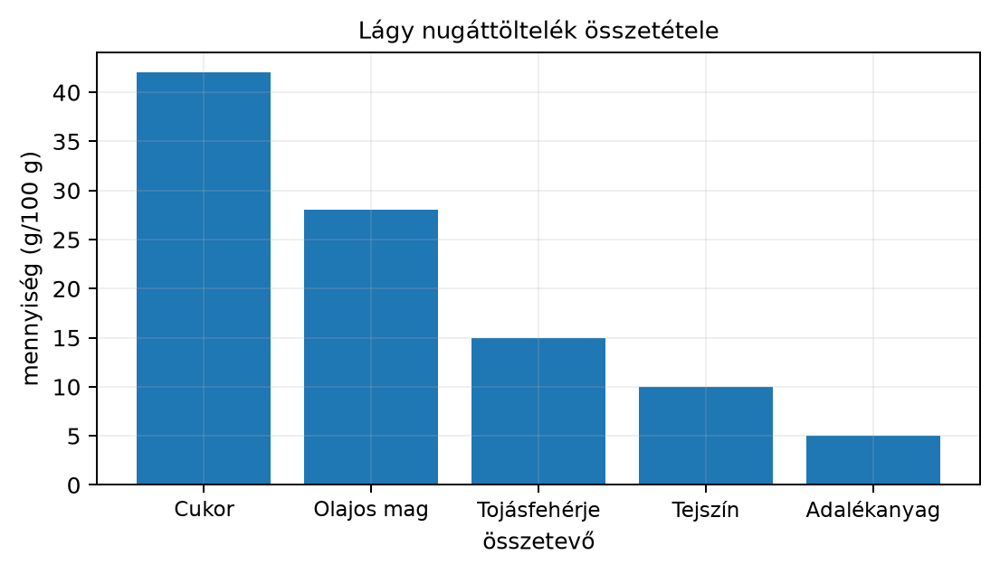

Egy cukrászüzemben a bonbonkészítés a hidegcukrászati munka egyik legkényesebb területe. A megrendelő azt várja, hogy a bonbon külseje fényes, vékony burka ropogós, a belseje pedig jól felismerhető, tiszta ízű legyen. Ha a konyakos meggyet nedvesen tesszük a csokoládéba, a burkolat megreped, a meggy kiereszti a levét, és a bonbon tárolás közben bepenészedik. Ha a marcipánbonbon masszája túl lágy, a bonbon szétfolyik a mártás során; ha a nugát túl kemény, nehezen vágható, és mártáskor letörik. A gyümölcs-, marcipán-, nugát- és grillázsbonbonok közös jellemzője, hogy a töltelék állaga, víztartalma és allergéntartalma döntően meghatározza a technológiát. Ebben az alfejezetben ezt a négy bonboncsoportot tanuljuk meg úgy, hogy a félkész termékekből (alkoholos gyümölcs, étkezési marcipán, nugát, grillázs) stabil, jól vágható, biztonságos bonbonokat készítsünk.
Képzelj el egy hűtött, száraz bonbonkészítő pultot: bal oldalon temperált étcsokoládé, mellette lecsöpögtetett, kissé megszikkadt konyakos meggy; középen porcukorral kinyújtott rózsaszín marcipánlap; jobb oldalon szeletelt nugát és kihűlt, apróra tört grillázs. Minden anyag fölött saját jelölt edény, külön kanállal, hogy az allergén diófélék ne keveredjenek a gyümölcsös töltelékbe. A munkamenet úgy áll össze, mint egy réteges bonbon: a tölteléket előbb stabilizáljuk (lecsöpögtetés, pihentetés, hűtés), azután mártjuk vagy formázzuk, végül azonnal hűtőben dermesztjük. Ezt a sorrendet mutatja a technológiai lap is.
Definíció. A gyümölcs-, marcipán-, nugát- és grillázsbonbonok olyan, többnyire csokoládéval vagy hasonló bevonóval burkolt cukrászati készítmények, amelyek tölteléke valamilyen tartósított gyümölcs, étkezési marcipán, nugát vagy grillázs, illetve ezek kombinációja.
Szabály. A bonbon töltelékét mindig a burkolat anyagával összhangban kell megválasztani. A vizes, alkoholos vagy magas nedvességtartalmú töltelékhez zsíros, vízzáró burkolat kell, például jól temperált étcsokoládé. A száraz, formázható töltelékhez (marcipán, nugát, grillázs) vékonyabb vagy akár teljes burkolat is alkalmazható.
Gyümölcsbonbonok. Ide tartoznak a kandírozott, aszalt, vastagcukorban főzött vagy alkoholban tartósított gyümölcsből készülő bonbonok. A gyümölcs lehet egész, felezett, magozott vagy gyümölcspépből, gyümölcslekvárból főzött massza. A hagyományőrző magyar gyümölcsbonbon legismertebb képviselője a konyakos meggyből készült bonbon, de ide sorolható a rumos szilva, a pálinkás meggy és a kandírozott narancshéj is. Eredeti receptúra: a konyakos meggy pontos gyümölcs–alkohol–cukor arányai üzemenként és családi hagyományonként változnak; ebben a könyvben a szakmában elterjedt iskolai tanulási receptet adjuk meg (ellenőrizendő: Cukrász Ipartestület vagy iskolai receptgyűjtemény).
Marcipánbonbonok. A marcipánbonbon tölteléke étkezési marcipánból vagy marcipán és egyéb anyagok (pl. tojáshab, gyümölcspép, porcukor) keverékéből készül. Formázható, kis víztartalmú, ezért jól tűri a burkolást, és hűtés nélkül is viszonylag stabil marad. A marcipánbonbon lehet egyszerű formázott darab, mártott bonbon, vagy étkezési marcipánba csomagolt gyümölcsmag (pl. marcipánnal burkolt rumos meggy).
Nugátbonbonok. A nugátbonbon tölteléke hideg vagy meleg úton készült nugát, azaz pralinéból, cukorból, tojáshabból és pirított olajos magvakból készült massza. Lehet lágy, kenhető nugát vagy kemény, szeletelhető nugát. A bonbonban a nugátot gyakran csokoládéval, tejszínnel vagy lágy vajkrémmel kombinálják, hogy könnyebben formázható legyen.
Grillázsbonbonok. A grillázsbonbon tölteléke karamellizált cukorral összeállított, aprított vagy tört olajos mag, gyakran vajjal, tejszínnel lágyítva. A grillázs lehet kemény, ropogós, vagy puha, kenhető (pralinészerű). A bonbonban a grillázs rétege vagy darabkái a burkolat alatt roppanós, karamelles ízű betétet adnak.
A konyakos meggy bonbonhoz a Gyümölcsök előkészítése, gyorsfagyasztás és vízelvonás és a Hőkezelés, vastagcukorban és alkoholban tartósítás alfejezetben tanult alkoholos meggyet használjuk. A meggyet a felhasználás előtti napon szűrőre tesszük, és hűtőben, lefedve lecsöpögtetjük (tanulási példa; 24–72 óra, a gyümölcs nedvességétől függően), közvetlenül mártás előtt pedig még 20–30 percig szűrőn szikkasztjuk. A cél, hogy a szemek felülete éppen csak nedves, de ne folyjon róla folyadék; ellenkező esetben a csokoládéburkolat nem tapad, és a maradék alkoholos lé a burkolat alatt kicsapódik.
Higiénia. Az alkoholos tartósítás hideg eljárás, ezért a meggy lecsöpögtetését, keverését és mártását tiszta eszközökkel, hűtött környezetben végezzük. A fel nem használt meggyet azonnal vissza kell tenni a fedett üvegbe vagy edénybe, és 0–5 °C-on tárolni (ellenőrizendő: hatályos hűtési előírás).
A lecsöpögtetett meggyet először enyhén megszórhatjuk porcukorral, de ez nem minden receptben szerepel. A elegánsabb eljárás az, ha a meggyet kevés, jól temperált étcsokoládéba mártjuk, majd hűtőrácson dermedni hagyjuk, és csak utána mártjuk véglegesen csokoládéba. Ez a kettős mártás védi a burkot a gyümölcs savasságától és nedvességétől. A burkolathoz 31–32 °C munka-hőmérsékletű, temperált étcsokoládét használunk, ugyanúgy, mint a Bonbonok általános jellemzői alfejezetben (a hőfok a csokoládé típusától függ, ellenőrizendő: gyártói temperálási görbe).
Kritikus pont. A konyakos meggy bonbonnál a fő veszély a burkolat alatti nedvesség és a szobahőmérsékleten való tárolás, mert a maradék alkohol és víz mikrobasejtjei szobahőn elszaporodhatnak. A kész bonbont hűtőszekrényben, zárható dobozban, 0–5 °C-on tároljuk, és 3–5 napon belül felhasználjuk; kivétel után zárt dobozban hagyjuk visszamelegedni, hogy ne csapódjon ki a nedvesség (cukorvirágzás; a Bonbonok általános jellemzői alfejezet száraz, 14–18 °C-os tárolásától ez az alkoholos, nedves töltelék miatt tér el) (ellenőrizendő: üzemi útmutató, HACCP-terv).
A marcipánbonbon alapja az Étkezési marcipánok alfejezetben készült étkezési marcipán. A bonbonformázáshoz a masszát annyi porcukorral vagy kevés glükózzal állítjuk be, hogy ne ragadjon a kézhez és a formához, de ne is morzsálódjon. A massza hőmérséklete 18–20 °C legyen; hideg kézzel, hűtött márványlapon dolgozzunk.
A legegyszerűbb marcipánbonbon a formázott, mártott darab: a marcipánt hengerré sodorjuk, azonos méretre vágjuk, golyóvá formázzuk, majd temperált csokoládéba mártjuk. A mártáshoz 31–32 °C-os temperált csokoládét használunk, hogy a marcipán ne olvadjon meg, de a csokoládé folyékony maradjon. A bonbont mártóvillával emeljük ki, lecsöpögtetjük, és sütőpapírra tett rácsra helyezzük. A burkolat megszilárdulásához 10–15 perc hűtő, 12–16 °C-os dermesztés kell.
Továbbvitt eredmény. A mártott marcipánbonbon technikáját használjuk a Bonbonok jellemzői, alapanyagai és gyártási módszerei alfejezetben leírt általános mártási műveletnél, valamint a Különleges díszítés: csokoládé-, marcipán-, karamell-, zselatinmassza- és grillázsdíszek alfejezet marcipánfelhasználásánál.
A marcipánnal burkolt konyakos meggy vagy rumos szilva az egyik legkedveltebb hagyományos bonbon. A lecsöpögtetett gyümölcsöt vékony marcipánlapba csomagoljuk, a széleket összedolgozzuk, golyóvá formázzuk, majd étcsokoládéba mártjuk. A marcipán réteg megköti a gyümölcs nedvességét, és védi a csokoládét. A bonbonban a marcipán enyhén megszívja magát a gyümölcs alkoholos levéből, ami néhány órás hűtött pihentetés után harmonikus ízt ad. Higiénia. A marcipán dióféléket tartalmaz, ezért külön allergénjelölést igényel (mandula), és kerülni kell a keresztszennyezést.
A nugátbonbon tölteléke a Sütőmarcipánok, makronok és nugátok alfejezetben tanult nugát. A lágy, meleg úton készült nugát kenhető, ezért gyakran fröccsöntött vagy csillagcsöves habzsákból adagolják bonbonformába. A keményebb, hideg úton készült nugátot hűtve szeleteljük, és kézzel vagy formával daraboljuk.
A legegyszerűbb nugátbonbon a szeletelt nugát étcsokoládéba mártva. A nugátot hűtőben 8–10 °C-ra hűtjük, majd éles, vékony pengéjű késsel 2–3 cm-es kockákra vágjuk. A vágott darabokat mártóvillára tűzzük, és 31 °C-os (a munka-hőmérséklet alsó széle), temperált csokoládéba mártjuk. A nugát olajos magvat tartalmaz, ezért a csokoládé hőmérséklete ne legyen 32 °C fölött, különben a nugát megolvad és a forma elúszik (ellenőrizendő: nugát olvadáspontja).
A lágy nugátot polikarbonát bonbonformába tölthetjük. A formába először temperált csokoládéból vékony kelyhet készítünk, hűtőben dermesztjük, majd a 24–26 °C-ra hűtött lágy nugátot habzsákkal a mélyedésbe töltjük. A tetejét ismét csokoládéval zárjuk, a felesleget lehúzzuk, és hűtőben dermesztjük. A bonbon kiborításakor a forma száraz, a burkolat fényes, a nugát egyenletesen vágott felületű.
Kritikus pont. A nugátban lévő tojáshab és tejszín miatt a töltelék mikrobiológiai kockázatot jelent. A lágy nugátot a készítés után 2 órán belül hűtőbe kell tenni, és a kész bonbont 0–5 °C-on, legfeljebb 3–5 napig tároljuk. A hőkezelt tojáshabos nugát hosszabb eltarthatóságú, de a tárolási hőfokot mindig ellenőrizni kell. Allergén. A nugát tartalmazhat tojást, tejet, dióféléket, szóját; a pontos jelölést lásd a Jogszabályi és higiéniai követelmények szakaszban.
A grillázsbonbon tölteléke a Karamell és olvasztott cukorkészítmények: dobos cukor, grillázs, cukorfesték alfejezetben készült kemény vagy puha grillázs. A kemény grillázst aprítjuk vagy durvára törjük, és gyakran kevés temperált csokoládéba, vajkrémbe vagy lágy nugátba keverjük, hogy a burkolat alatt összeálljon. A puha grillázs (praliné) önmagában kenhető, ezért bonbonformába tölthető.
Figyelem. A grillázs készítésekor a forró karamell 150 °C fölött van; a felhasználás előtt a grillázst teljesen ki kell hűteni. A grillázs aprításakor a repkedő éles darabok szembe kerülhetnek, ezért védőszemüveget vagy legalább a fejet elfordítva, zárt edényben törjük. Biztonsági korlát. A forró karamell kezelése tanműhelyi vagy üzemi környezetben, oktatás után és felügyelet mellett végezhető.
A legegyszerűbb grillázsbonbon az aprított kemény grillázsból készült, csokoládéval kötött massza. A grillázst 3–5 mm-es darálékká törjük, és 30 °C-os temperált tej- vagy étcsokoládéval összekeverjük, amíg formázható masszát kapunk. A masszát azonnal golyóvá formázzuk, vékonyan csokoládéba mártjuk, és rácsra tesszük. A burkolat megszilárdulása után a bonbon ropogós, karamelles, diós ízű.
A puha grillázst (pralinét) lehet bonbonformába tölteni, hasonlóan a lágy nugáthoz. A pralinét 25–27 °C-ra temperáljuk, habzsákkal adagoljuk a csokoládéval kibélelt forma mélyedésébe, majd csokoládéval zárjuk. A praliné jellegű bonbon érzékeny a hőre és a nedvességre, ezért hűvös, száraz helyen tárolandó.
Jogszabály. A bonbonokra mint élelmiszerekre az általános élelmiszerjog és a higiéniai előírások vonatkoznak: 178/2002/EK rendelet (élelmiszerjog), 852/2004/EK rendelet (élelmiszer-higiénia), 1169/2011/EU rendelet (fogyasztók tájékoztatása, allergénjelölés). Az allergén 14 csoportját a Allergének és intoleranciák: tájékoztatás és allergénkezelés a cukrászüzemben alfejezetben tanultuk; a marcipán-, nugát- és grillázsbonbonoknál legalább a dióféléket, a tejterméket, a tojást és a glutént ellenőrizni kell. A konyakos meggy bonbonnál az alkoholtartalmat fel kell tüntetni, ha a késztermék alkoholtartalma ezt indokolja (ellenőrizendő: 1169/2011/EU jelölési küszöbérték). Gyermekeknek szánt termékbe ne tegyünk alkoholos tölteléket, vagy kizárólag olyan változatot gyártsunk, ahol az alkoholtartalom elpárolgott, és a termék jelölt alkoholmentes. A Magyar Élelmiszerkönyv a csokoládé- és bonbonmegnevezésekre vonatkozó előírásokat tartalmaz (ellenőrizendő: Magyar Élelmiszerkönyv bonbon-előírás).
Kritikus pont. A bonbonkészítés során a fő mikrobiológiai kockázatot a tejes, tojásos, tejszínes töltelékek és a hűtetlen tárolás jelentik. A következő táblázat foglalja össze a jellemző CCP-ket.
| Lépés | Veszély | Megelőzés | Kritikus határ (példa) | Monitorozás | Helyesbítő tevékenység | Dokumentum |
|---|---|---|---|---|---|---|
| Töltelékkészítés (lágy nugát, praliné) | Mikrobaszaporodás | Hőkezelés, gyors hűtés | Maghőmérséklet 70 °C fölött, majd 2 órán belül 0–5 °C | Maghőmérő, óra | Újraforrósítás vagy a tétel selejtezése | HACCP-lap |
| Alkoholos gyümölcs lecsöpögtetése | Alkoholos lé, kórokozó-szaporodás | Hűtött tárolás, lefedés | 0–5 °C | Hűtőhőmérő | Hőmérséklet-javítás, a termék selejtezése | Hűtőnapló |
| Bonbon hűtve tárolása | Mikrobaszaporodás | Hűtve tárolás, zárt doboz | 0–5 °C, max. 3–5 nap | Hűtőhőmérő, címke | Hőmérséklet-javítás, lejárt tétel kivonása | Tárolási lista |
Megjegyzés. A táblázat hőfok- és időértékei tanulási példák, nem hatósági előírások; a pontos határértékeket az üzemi HACCP-terv és a hatályos útmutatók alapján kell rögzíteni (ellenőrizendő).
Konyakos meggy bonbon készítése mártásos technikával, temperált étcsokoládé felhasználásával.
| Nyersanyag | Mennyiség (g) | Megjegyzés |
|---|---|---|
| Konyakos meggy (lecsöpögtetve) | 200 | kb. 20–25 szem (kb. 8–10 g/szem), bonbononként 1 szem |
| Étcsokoládé 58–70% | 300 | temperáláshoz; a felesleg a lecsöpögő rész |
Összes töltelék tömeg: 200 g; összes felhasznált csokoládé: 300 g (a tényleges fogyás kb. 80–100 g). Alapmennyiség: 20 db bonbon, darabonként kb. 12–15 g.
Munkaruha, hajháló, ékszer le, kézmosás; a munkafelületet és az eszközöket tisztítsuk és szárítsuk. A meggyet tiszta szűrőben, hűtőben csepegtessük le. A csokoládét csak száraz edénybe tegyük, mert a vízcseppek rontják a temperálást.
Biztonsági korlát. A csokoládé melegítése és a mártás tanműhelyi vagy üzemi környezetben, oktatás után és felügyelet mellett végezhető; otthon háztartási eszközökkel, kis adagban gyakoroljunk.
Allergének. A termék tejmentes étcsokoládé esetén glutén-, tojás-, tej- és diófélamentes lehet, de ezt csak akkor mondhatjuk ki, ha az alapanyagok címke szerint nem tartalmaznak allergéneket, és a keresztszennyeződést kizártuk. A csokoládé gyakran tartalmaz tejet és dióféléket nyomokban (ellenőrizendő: gyártói címke).
A kész bonbont 0–5 °C-on, zárt dobozban tároljuk. Javasolt fogyaszthatósági idő 3–5 nap (ellenőrizendő: üzemi útmutató).
A gyümölcs-, marcipán-, nugát- és grillázsbonbonokat érzékszervileg és tömegre egyaránt ellenőrizzük.
A tömegellenőrzésnél a receptúra szerinti darabtömeget mérjük; az eltérés legfeljebb ±5% lehet a technológiai lapon rögzített értéktől (ellenőrizendő: üzemi előírás).
Egy cukrászüzemben esküvői bonbonválogatást rendelnek: 100 db konyakos meggy, 100 db marcipános meggy és 100 db nugátkocka. A munkaszervezésnél a következő sorrend érvényesül: reggel a meggyet lecsöpögtetjük, a csokoládét temperáljuk; először a szárazabb marcipánbonbonokat mártjuk, mert azok nem érzékenyek annyira a csokoládé hőmérsékletére, majd a konyakos meggyet, végül a nugátot, mert annak a leghidegebb csokoládé kell. A dolgozó minden termékváltásnál tiszta eszközt használ, és az allergéntartó nugátot nem érinti azután, hogy a gyümölcsös bonbonnal dolgozott. A kész bonbonokat külön dobozba csomagolják, a dobozra felkerül a termék neve, a tárolási hőfok és az allergének jelölése. Délután a hűtőnaplóban rögzítik a hűtő hőmérsékletét, és a maradék csokoládét légmentesen, hűvös helyen tárolják. Így a rendelés biztonságos, nyomon követhető, és a vendégek nem panaszkodnak sem repedt burkra, sem keserű ízre.
1. feladat (A). Sorold fel a gyümölcs-, marcipán-, nugát- és grillázsbonbonok közös és eltérő minőségi jellemzőit egy táblázatban!
2. feladat (A). Határozd meg, hogy 40 db konyakos meggy bonbonhoz mennyi étcsokoládéra van szükség, ha a technológiai lap szerint 20 db-hoz 300 g étcsokoládét használunk, és a felesleget visszaöntjük! (A felhasznált mennyiséget a lecsöpögő veszteség miatt 20 db-onként 80 g-nak vesszük.)
3. feladat (B). Egy marcipánbonbon masszájához 300 g étkezési marcipánt és 20 g porcukrot keverünk. A masszából 20 db golyót formázunk, a golyók össztömege 310 g (darabonként 15,5 g). Mennyi a veszteség? Mekkora a bruttó anyagszükséglet, ha 60 db bonbont szeretnénk, és a formázási veszteség százalékos értéke állandó?
4. feladat (B). Egy lágy nugáttöltelék 100 g-onként 42 g cukrot, 28 g olajos magvat, 15 g tojásfehérjét, 10 g tejszínt és 5 g adalékanyagot tartalmaz. Készíts oszlopdiagramot szemléltető adatsorral (chart blokk) a töltelék összetételéről, és számítsd ki az összetevők százalékos arányát!
5. feladat (C). Egy vendég azt állítja, hogy a grillázsbonbon keserű, égett ízű. Mi a lehetséges ok? Hogyan döntöd el, hogy a karamellizálás hibás-e, és mit javasolsz a tétel javítására vagy selejtezésére? Fogalmazd meg a HACCP-döntést: lehet-e a grillázst felhasználni, vagy a tételt ki kell vonni?
6. feladat (D). Készítsd el a konyakos meggy bonbont a fenti technológiai lap szerint, tölts ki egy üzemi termelési naplót (dátum, tételszám, nyersanyag-tétel azonosítók, hűtési hőfok, kész darabszám, eltérés, megjegyzés), és értékeld a kész bonbonokat a minőségi jellemzők alapján!
| Jellemző | Gyümölcsbonbon | Marcipánbonbon | Nugátbonbon | Grillázsbonbon |
|---|---|---|---|---|
| Töltelék víztartalma | közepes/magas | alacsony | közepes | közepes/alacsony |
| Allergének | általában nincs | diófélék | diófélék, tojás, tej | diófélék |
| Állag | puha, lédús | tömör, formázható | krémes vagy szeletelhető | ropogós |
| Jellemző hiba | burkolatrepedés | morzsálódás, ragadás | megolvadás | égett karamell |
| Tárolás | 0–5 °C | hűvös, száraz | 0–5 °C | hűvös, száraz |
Adott: 20 db-hoz 300 g csokoládé; a felhasznált mennyiség 20 db-ra 80 g. Keresett: 40 db-hoz szükséges csokoládé. A 40 db az adott 20 db kétszerese, tehát a teljes csokoládéigény , a tényleges felhasználás . A 600 g csokoládé elegendő, mert a felesleget visszaöntjük, de a munkavégzéshez legalább 600 g temperált csokoládét kell biztosítani. Ellenőrzés: , .
Adott: massza összetevők: 300 g marcipán + 20 g porcukor = 320 g nyersanyag. Formázott golyók össztömege: 310 g. Keresett: veszteség százalékban, és 60 db-hoz anyagszükséglet. Veszteség . Behelyettesítés: . 60 db esetén a késztermék tömeg: (nettó). Mivel a veszteség 3,125%, a bruttó anyagszükséglet: . Ellenőrzés: .
A nugáttöltelék 100 g-jának összetétele: cukor 42%, olajos mag 28%, tojásfehérje 15%, tejszín 10%, adalékanyag 5%.

A diagram a cukor, olajos magvak, tojásfehérje, tejszín és adalékanyag mennyiségét mutatja. Számítás: minden összetevő 100 g-ban a megadott gramm, így a százalékos arány: .
A keserű, égett íz oka szinte mindig a túlhevített karamell. Ellenőrzéshez megmérjük a grillázs színét (túl sötét, kékes-fekete), illatát (égett cukor), és ha van bontatlan adag, annak karamellizálási hőmérsékletét. A HACCP-elv szerint az égett karamellt nem szabad „megmenteni”, mert az akrilamid és kellemetlen íz miatt fogyasztói reklamációt és esetleges egészségügyi kockázatot okoz. A tételt fel kell függeszteni, a hibás grillázst ki kell vonni, és a kész bonbonokat selejtezni kell; az égett tételt nem használjuk fel és nem dolgozzuk át más termékbe, a hibát (hőmérséklet, idő) dokumentáljuk. Megjegyzés. Az akrilamid érzékszervileg nem észlelhető, csak laborvizsgálattal mérhető; a minimalizálás elve (a sötétre pirítás, túlhevítés kerülése) a 2017/2158/EU rendelet szemléletét követi (ellenőrizendő: a rendelet hatálya a cukrászati termékekre, hatályos útmutató).
A gyakorlati feladatnál a tanuló kitölti a termelési naplót: dátum, tételszám, nyersanyag-tétel azonosítók (pl. „Meggy, 2025.01.10-i tétel; Csokoládé, 2025.01.05-i tétel”), hűtési hőfok (0–5 °C), kész darabszám, eltérés, megjegyzés. Értékelési szempontok: a bonbonok felülete fényes-e, nincs-e lefolyó csokoládé; a burkolat vékony-e; a meggy nem ereszt-e; a töltelék és burkolat aránya; a tárolási hőfok betartása. Várt eredmény: 20 db hibátlan bonbon, darabonként 12–15 g, a napló hiánytalanul kitöltve.
A gyümölcs-, marcipán-, nugát- és grillázsbonbonok a bonboncsalád töltelék szerinti csoportjai. A gyümölcsbonbonoknál a legfontosabb a nedvesség eltávolítása; a konyakos meggyet lecsöpögtetve, kettős mártással vagy marcipánköpennyel védjük. A marcipánbonbonoknál a massza 18–20 °C-on formázható, és hűtött környezetben mártjuk; a marcipánnal burkolt gyümölcs jól védi a nedvességet. A nugátbonbonoknál a nugátot hűteni kell, és a csokoládé hőfoka ne haladja meg a 32 °C-ot, különben a nugát megolvadhat. A grillázsbonbonoknál a karamellizálás hőfokának 160–180 °C között kell maradnia, mert a túlhevített karamell keserű, és az égett tételt selejtezni kell (az akrilamid minimalizálásának elve is a túlhevítés kerülése). Minden bonbonnál jelezni kell az allergéneket; a konyakos meggynél az alkoholtartalom jelölése és a gyermekeknek szánt változat tilalma is érvényes. A továbbvitt eredmények: a mártási és formázási technikák, a temperált csokoládé kezelése és a HACCP-szemlélet a vizsgán és a munkahelyen napi szinten szükségesek a bonbonok általános jellemzői és a csokoládé temperálása alfejezetekkel összhangban.